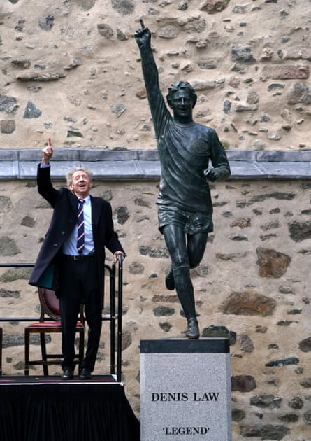
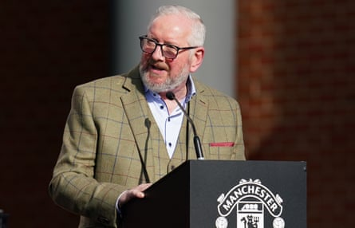
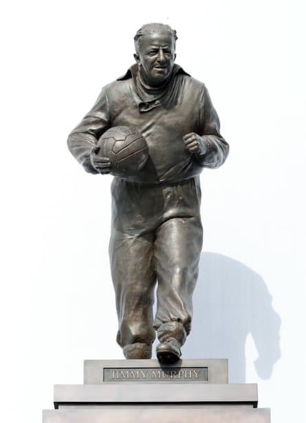
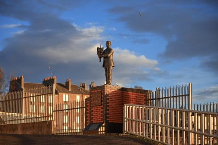
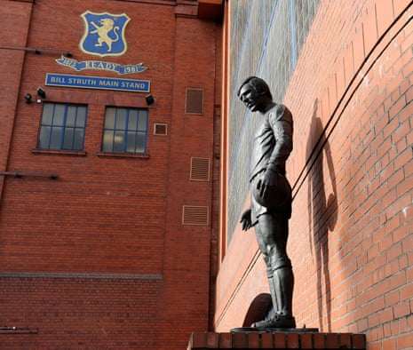
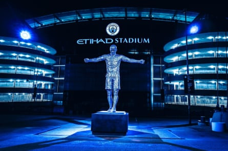
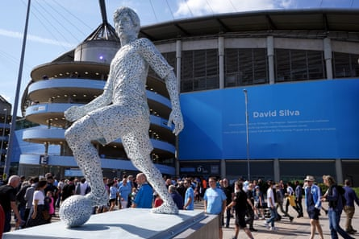
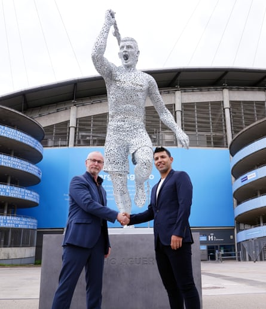

A t its heart, football is about community. A feeling of shared identity and purpose. A place where supporters gather to watch their team. The games, goals and moments that live on in the club’s collective memory through a shared act of will. The people responsible for these defining moments – shrewd managers, inspiring captains, prolific goalscorers – are increasingly immortalised in statues.
A sculptor is enlisted to preserve their likeness in a single definitive pose. The subjects take on a size and form, literally larger than life, befitting the impact they had on the club and community that chooses to honour them. According to the Sporting Statues Project , which is run by Chris Stride and Ffion Thomas, there are more than 100 football statues in the UK. The vast majority have been made since the turn of the millennium and there are even more in progress. They have exploded in popularity, becoming the established means of commemoration.
Alan Herriot has been sculpting for most of his life. The 73-year-old from Edinburgh has worked on a wide range of projects, from playful figures for tourist attractions to poignant military monuments. His first football sculpture was installed in July 2012. As a Manchester United supporter, the subject held huge personal significance.
“Denis Law was so revered,” says Herriot. “He was my hero when I was a kid. When we played football, we were running about gripping the sleeves of our shirts. We tried to mirror our heroes and Denis was one of them, without a shadow of a doubt.”
Law achieved legendary status with Scotland and United. A stylish player and ruthless finisher, he won the Ballon d’Or in 1964. In recognition of a local hero who had a global impact, the Denis Law Legacy Trust commissioned Herriot to produce a statue of the striker to go in the Aberdeen Sports Village.
“They wanted the classic finger-in-the-air pose when he scored against England after they’d won the World Cup. We beat them 3-2,” says Herriot, recalling a famous win at Wembley in 1967. “After that was done, they wanted me to cast another one to keep in storage so that later on it could be sited somewhere in the city.”
Denis Law with his statue in Aberdeen in 2021.Photograph: Andrew Milligan/PA
The second statue, a replica of the first, was installed on Aberdeen’s Marischal Squaret in November 2021. “He came to the unveiling,” recalls Herriot. “At that time, Denis wasn’t looking so well. He had the beginnings of dementia and he was apologising to anybody if he couldn’t remember their name. He was such a nice fella. He had time for everybody. Never a bad word came out of him.
“Whenever you meet celebrities, you try not to be too grovelling. You just try to be yourself. They know who they are and what they’ve done and why they’re getting a statue made. It’s probably a lot of fun for them. It was so nice to meet him and his family. After the unveiling, we went back to the town hall in Aberdeen and Sir Alex Ferguson was there. Now I wish I had done, but I didn’t even introduce myself to him.”
Herriot’s connection with Manchester United deepened when he made a statue of Jimmy Murphy, which is now proudly displayed outside the Stretford End at Old Trafford. In the wake of the Munich disaster, amid doubts about the club’s future, Murphy steered them to the FA Cup final as Matt Busby recovered in hospital. He played a crucial role in ensuring the club survived some of its darkest days.
Alan Herriot, who designed the statue of Jimmy Murphy.Photograph: Nick Potts/PA
Herriot had virtual meetings with the Manchester Munich Memorial Foundation and Murphy’s family as they weighed up which sculptor to hire. At his wife’s behest, he made a maquette – a scale model of his eventual sculpture – to show them. Her instinct was right as he won the contract and a chance to pay homage to an unsung hero who shunned the limelight, burnishing Murphy’s legacy.
“The family wanted a particular pose,” says Herriot. “They wanted to show Jimmy in his old tracksuit. That’s how he was – a hands-on fella. Great coach. Great instigator. He could instil a bit of life into the team. It’s a shame they haven’t got someone like him now at Manchester United.”
The statue of Jimmy Murphy at Old Trafford.Photograph: Colorsport/Shutterstock
Herriot speaks passionately about many things, including football, which is closely entwined with his family. Alex Young and Jackie Neilson, two famous former players, were his brothers-in-law. After winning two league titles and the Scottish Cup with Hearts, Young became a club hero during his eight years at Everton. The elegant forward was nicknamed “The Golden Vision” and remains fondly remembered, with an Alex Young suite at Goodison Park.
While Neilson didn’t reach those extraordinary heights, he still fared well. The midfielder played for St Mirren throughout his career and was a Scottish Cup winner in 1959. Full international honours eluded him – unlike Young, who scored five goals in his eight senior caps – but he made almost 400 appearances for the Buddies.
When sculpting, Herriot follows a trusted process that has served him well over the years. “I tend to use an aluminium armature, almost like a stick figure. You can bend it to whatever shape you need,” he says. “That’s mounted on to a turntable so I can get around the thing. I build up the shapes using two-part foam and I can carve that back.
“Basically, you spray the stuff on and within 10 to 20 minutes it’s hard. You can just build that up and then carve it back really accurately. It’s light and it’s strong. If I make a mistake, I can cut it off. Doing it that way, I end up with a good shaped figure, which is in proportion, and has got quite a lot of detail on it. Sometimes I’ll rub down the foam and then treat it with resin so there’s a slightly hard surface to it. It just takes the clay a bit better.
“From that point on, I use an oil-based clay. It’s a slower process, and it’s harder to work than the wet, grey clay we normally use in sculpture, but the great thing is that you don’t have to wet it down and then keep covering it up with polythene. You just leave it. It’s like plasticine: it doesn’t go hard, but it’s hard enough.
“Once it’s finished, and I’ve done all the modelling, the foundry will come in. They need at least three months to cast it, make the moulds and put it into bronze. When you put something into bronze, you can burnish bits and pieces and you start getting that really nice detail, even just down to the veins on the hand. Wee details like that make it lifelike.”
The statue of Jim McLean that stands outside Tannadice Park was also sculpted by Herriot. The former Dundee United manager and chairman is shown holding the Scottish Premier Division trophy, which he secured in 1983 when he led the club to their first – and so far only – league title. As is often the case, his figure serves as a welcome reminder of former glories.
The statue of Jim McLean, who was the Dundee United manager when they won the league title in 1983.Photograph: David Young/Action Plus/Shutterstock
Most recently, Herriott has been sculpting two Swindon Town legends. After successfully bringing Don Rogers’ League Cup-winning goal against Arsenal back to life, he’s now working on a statue of his former teammate John Trollope, whose association with the club stretches back to the 1950s. Trollope made a record 889 appearances for Swindon, before serving as manager and then in various coaching capacities.
“He was completely dedicated to the club, so if anyone should have a statue it’s definitely him. I’m standing here looking at what I’ve done so far and it’s looking good. It’s going to be a really nice one. This is life-and-a-quarter size, so the figure is about seven-and-a-half feet high. It’s a lovely scale,” says Herriot, who works from a studio at the bottom of his garden.
He admits that generating a good likeness can be a maddening task that requires multiple attempts, particularly when working from photographs. “I’m my own worst critic. If I’m not happy with it, it doesn’t go out. It simply doesn’t happen. When it came to Don Rogers, for instance, I cut that head off six times! It’s kind of scary when you do that.
“You’re looking at something for so long that, I don’t know what happens, your proportions go out the window or something happens in your brain. Whatever it is, I’ve at least got the sense to come back in the next day and go: ‘That is just outrageous!’ In sculpture, to wrestle with something is a mistake. Just rip it up and start again.”
Andy Scott is best known for creating The Kelpies , two 30-metre-high horse heads made of stainless steel. Situated between Falkirk and Grangemouth, where the Forth and Clyde canal meets the river Carron, they tower over the surrounding landscape. After spending most of his life in Glasgow, Scott moved to the United States eight years ago.
Following a spell in Philadelphia, he’s now in Los Angeles. A Rangers fan, he has produced sculptures of two of their greatest players – John Greig and Jim Baxter. The first statue was designed to mark the 30th anniversary of the Ibrox disaster, when 66 Rangers supporters were crushed to death in a stairwell following an Old Firm game in January 1971. Greig was captain that day. “An artist called Senga Murray, who’s done all the paintings and murals for Rangers in the Blue Room, got in touch and asked if I was interested in doing the job. Of course, I jumped at it,” recalls Scott.
“I worked very closely with a colleague, an old friend of mine, Alison Bell, who’s a fantastic sculptor, because we had to turn it around very quickly. The last time I passed it in Glasgow it still had floral tributes at the bottom. It’s obviously become a very important thing for fans of the club and especially for families who lost people in that disaster.”
Baxter played many games with Greig for club and country, and he had his own statue just a couple of years later. It was installed outside the Miners’ Welfare Institute in his home town, Hill of Beath. The skilful midfielder, who taunted England by juggling the ball during the famous 3-2 win that Law scored in, is regarded as one of Scotland’s most talented players. More than just his physical likeness, Scott tried to depict Baxter’s personality and playing style.
“He was a larger-than-life character. In Glasgow, we have this word ‘gallus’. It’s a kind of cockiness or self-assurance. Jim Baxter had that in spades,” says Scott. “I noticed that he didn’t so much kick the ball as scoop it. I tried to get that too. He’s got the ball on the outside of his leading foot. I tried to capture the fact that he was known as ‘Slim Jim’. He held his elbows high and he had quite an ungainly running style.”
A statue of former Rangers captain and manager John Greig at Ibrox.Photograph: Russell Cheyne/Reuters
Representing movement is one of the greatest challenges of sculpting a footballer. Although much of the game’s appeal lies in its fast-paced, dynamic action, trying to convey that in such a fixed medium can be difficult. Sometimes, little artistic flourishes can make all the difference, as Scott details with reference to his trio of Manchester City statues: Vincent Kompany , David Silva and Sergio Agüero. They were constructed using the same technique as The Kelpies.
“Rather than just welding the steel plates in a random arrangement, I had them lined up so that they would accentuate the direction – the flow – of the creases in the shirts. The way that you arrange the steel plates as you weld them together creates a kind of visual dynamic. I can’t think of the right words, to be honest with you. I guess that’s what makes it art,” laughs Scott.
“The way I make the steel, there’s a perforation to it. The light can come through and that helps give it a shimmer. Visually, it comes alive a little bit in a way that a big static lump of steel wouldn’t. I’m very pleased with how it came out. It seemed to capture the movement of the players quite well. A bit like football itself, it takes a lot of practice.”
Unlike the vast majority of football statues, which are made with clay and cast in bronze, Scott’s use of steel makes his work for City very distinctive – silvery, bright and almost futuristic in appearance. He believes this bold look worked in his favour.
“I think that’s what caught the eye of Man City. It’s such an unusual technique and it has a certain modernity to it. A contemporary feel that they really appreciated. When you go to the Etihad, they have a lot of structural galvanised steel there, so it suits the ethos and the aesthetic of the stadium very well,” says Scott.
“It was very demanding. Steelwork is physically very different. If you make a mistake in clay, you can just change it with your thumb. With steel, you need to chop it off with oxyacetylene. You need to grind it all back, get in behind it, redo it and reweld it. It’s a very laborious process, which, if I’m honest, I underestimated, but I just had to work hard. We got there in the end.”
Statues of Kompany and Silva were delivered to the same deadline. Both players had helped to transform City. They did so using different attributes, reflected in the way Scott chose to represent them. Kompany’s pose shows him in a specific moment, after the final whistle blew on a vital 1-0 win over Leicester in his last home game for the club. The defender, renowned for his leadership skills and winning mentality, had scored the only goal to move City a step closer to retaining the Premier League title.
The statue of Vincent Kompany at the Etihad.Photograph: PA
“He’d already decided he was leaving but he hadn’t told anyone, so if you watch the game again, and you know that in the back of your mind, you can see that mixture of emotions as he’s walking off,” says Scott. “It was an incredible goal that he’d just scored. It was almost a poignant celebration. He had his head down and it was quite a contemplative pose. But with the arms outstretched it was almost messianic. It summed up that, for a while, he was Mr Manchester City .”
Silva’s pose was more traditional as Scott sought to reflect the midfielder’s graceful movement and vision. “I’ve caught him, with the ball at his foot, about to scoop it away. The way he played the game – looking two moves ahead – he was something else. I think they really appreciated that pose. He’s quite upright and looking over in the distance the way that he did.”
David Silva’s statue outside the Etihad.Photograph: Nick Potts/PA
There was only one option when it came to Agüero – the shirt-twirling celebration after his injury-time winner against Queens Park Rangers to dramatically wrest the title away from Manchester United in 2012. But sculpture is about far more than just surface-level aesthetics. Statues need substance as much as style.
“We had to do some very clever thinking to make sure they would stand up, and be rigid enough to withstand any potential mishaps, yet make them look effortless. When you’re doing public sculpture, you’ve always got to think, ‘What if?’ It didn’t really cross my mind that anyone would want to vandalise them – football fans show a lot of respect for sculptures, even at opposing teams’ stadiums – I was more concerned that someone might hang a scarf around them or climb on them in a moment of joy.”
Sergio Agüero with sculptor Andy Scott.Photograph: Martin Rickett/PA
With the statues of Silva and Agüero, both players only have one foot on the ground, which has to support a lot of weight above. “We had to do some quite serious structural work with steel tubes concealed inside the ankles. The base plate is a marvel of engineering but that’s all hidden underneath. Those two especially presented quite considerable technical challenges,” says Scott.
The biggest test of all is impossible to prepare for. Football incites strong emotions: supporters feel protective of their club and how they’re perceived. As a result, any statue has to satisfy a demanding audience. On some occasions, even the subject themselves. If the slightest shortcoming is perceived, it’s liable to be ruthlessly exploited by rival fans on social media.
“You’re capturing someone’s life – what they meant to that club, those fans and their families – with your own hands. It’s an incredible gift to be given, but a big responsibility. It can mess with your head a little bit if you think about it too much,” says Scott.
The new issue ofNutmeg magazineis out now.
“I understand the passion. I’ve been to a lot of games in my time. I totally get it. It puts a lot of pressure on you, and football fans can be a fickle bunch. For every 99 people who think your work’s great, there’ll be one who really hates it. There’s nothing you can do; you’re never going to please everyone.”
He admits that time is often the ultimate judge. “Once these big public sculptures have been unveiled, a measure of their success is that they fall into the collective ownership of the public. They become part of the community, the building or the setting they inhabit. Oftentimes, people won’t even think about who made it. If they’re successful, it’s as if they’ve always been there.”